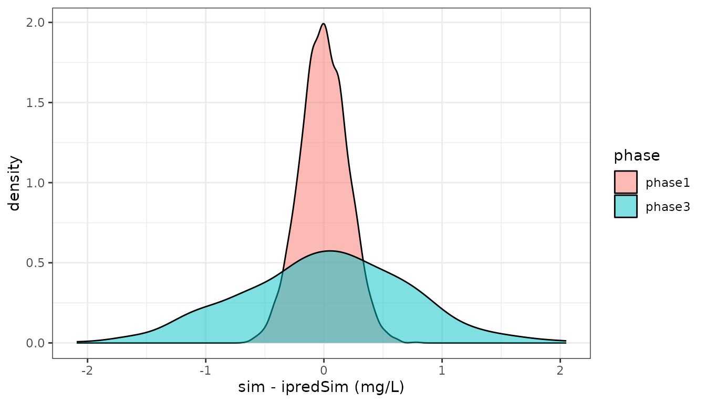
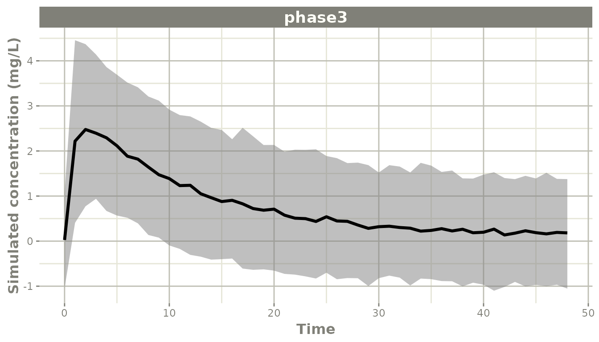

Separating phase 1 and phase 3 residual error
Source:vignettes/articles/rxode2-phase-residual-error.Rmd
rxode2-phase-residual-error.Rmd
library(rxode2)
#> rxode2 5.1.7 using 2 threads (see ?getRxThreads)
#> no cache: create with `rxCreateCache()`
library(ggplot2)Why one residual error model is often not enough
A pooled population PK analysis usually combines studies that were not run under the same conditions. Phase 1 data come from rich sampling in healthy volunteers at a single site, with a validated assay and controlled sample handling. Phase 3 data come from sparse sampling in patients across many sites, more variable sample handling, and sometimes a different assay version.
The structural model is the same for both – the drug does not change between phases – but the noise around the prediction is not. Fitting one residual error model to the pooled data splits the difference: it overstates the noise on the phase 1 observations and understates it on the phase 3 ones. Anything that reads the residual error then inherits that compromise, including the width of a simulated prediction interval and the weighting each observation gets during estimation.
The fix is to keep one prediction and give it two residual error models, one per phase.
Two endpoints on one prediction
An rxode2 error line may be named with
| <name> after the error expression. The name is the
endpoint, and the same model variable may be used by more than one of
them:
pk <- function() {
ini({
tka <- 0.45; label("Log Ka")
tcl <- 1; label("Log Cl")
tv <- 3.45; label("Log V")
eta.ka ~ 0.6
eta.cl ~ 0.3
eta.v ~ 0.1
phase1.sd <- 0.2; label("Phase 1 additive error (mg/L)")
phase3.sd <- 0.7; label("Phase 3 additive error (mg/L)")
})
model({
ka <- exp(tka + eta.ka)
cl <- exp(tcl + eta.cl)
v <- exp(tv + eta.v)
d/dt(depot) <- -ka * depot
d/dt(center) <- ka * depot - cl / v * center
cp <- center / v
cp ~ add(phase1.sd) | phase1
cp ~ add(phase3.sd) | phase3
})
}
pk <- pk()
print(pk)
#> ── rxode2-based free-form 2-cmt ODE model ──────────────────────────────────────
#> ── Initalization: ──
#> Fixed Effects ($theta):
#> tka tcl tv phase1.sd phase3.sd
#> 0.45 1.00 3.45 0.20 0.70
#>
#> Omega ($omega):
#> eta.ka eta.cl eta.v
#> eta.ka 0.6 0.0 0.0
#> eta.cl 0.0 0.3 0.0
#> eta.v 0.0 0.0 0.1
#>
#> States ($state or $stateDf):
#> Compartment Number Compartment Name
#> 1 1 depot
#> 2 2 center
#> ── Multiple Endpoint Model ($multipleEndpoint): ──
#> variable cmt dvid*
#> 1 cp ~ … cmt='phase1' or cmt=3 dvid='phase1' or dvid=1
#> 2 cp ~ … cmt='phase3' or cmt=4 dvid='phase3' or dvid=2
#> * If dvids are outside this range, all dvids are re-numered sequentially, ie 1,7, 10 becomes 1,2,3 etc
#>
#> ── μ-referencing ($muRefTable): ──
#> theta eta level
#> 1 tka eta.ka id
#> 2 tcl eta.cl id
#> 3 tv eta.v id
#>
#> ── Model (Normalized Syntax): ──
#> function() {
#> ini({
#> tka <- 0.45
#> label("Log Ka")
#> tcl <- 1
#> label("Log Cl")
#> tv <- 3.45
#> label("Log V")
#> phase1.sd <- c(0, 0.2)
#> label("Phase 1 additive error (mg/L)")
#> phase3.sd <- c(0, 0.7)
#> label("Phase 3 additive error (mg/L)")
#> eta.ka ~ 0.6
#> eta.cl ~ 0.3
#> eta.v ~ 0.1
#> })
#> model({
#> ka <- exp(tka + eta.ka)
#> cl <- exp(tcl + eta.cl)
#> v <- exp(tv + eta.v)
#> d/dt(depot) <- -ka * depot
#> d/dt(center) <- ka * depot - cl/v * center
#> cp <- center/v
#> cp ~ add(phase1.sd) | phase1
#> cp ~ add(phase3.sd) | phase3
#> })
#> }There is one cp, one set of ODEs and one set of
structural parameters. What differs is which standard deviation is
applied, and that is chosen per observation record.
The $multipleEndpoint table shows how a record selects
its endpoint:
pk$multipleEndpoint
#> variable cmt dvid*
#> 1 cp ~ … cmt='phase1' or cmt=3 dvid='phase1' or dvid=1
#> 2 cp ~ … cmt='phase3' or cmt=4 dvid='phase3' or dvid=2So an observation with cmt="phase1" (equivalently
dvid=1) gets phase1.sd, and one with
cmt="phase3" (dvid=2) gets
phase3.sd.
What rxode2 does with the shared variable
Almost everything downstream of the model – the simulated residual
draw, the residual parameter lookup, ar() state – is keyed
on the endpoint’s prediction variable. Two endpoints named
cp would collide there, so rxode2 gives each
of them a generated variable of its own and records the mapping:
pk$endpointAlias
#> rx.cp.phase1 rx.cp.phase3
#> "cp" "cp"
pk$predDf[, c("cond", "var", "dvid", "cmt")]
#> cond var dvid cmt
#> 1 phase1 rx.cp.phase1 1 3
#> 2 phase3 rx.cp.phase3 2 4You never write those lines and they never appear in your
model({}) block, in modelExtract(), or in the
solved output. They are only worth knowing about because
$predDf$var is where they show up.
Before this was supported the aliases had to be written by hand:
cp.phase1 <- cp
cp.phase3 <- cp
cp.phase1 ~ add(phase1.sd) | phase1
cp.phase3 ~ add(phase3.sd) | phase3That model still works and still means the same thing – it is just no longer necessary.
Simulating each phase
Label the observation records with the phase they belong to. A rich phase 1 profile and a sparse phase 3 trough/peak design:
ph1 <- et(amt=100) |>
et(seq(0.25, 24, by=0.5), cmt="phase1")
ph3 <- et(amt=100) |>
et(c(1, 4, 12, 24), cmt="phase3")Solving each design gives ipredSim (the individual
prediction) and sim (the prediction plus residual
error):
set.seed(42)
s1 <- rxSolve(pk, ph1, nSub=100, addDosing=FALSE)
s3 <- rxSolve(pk, ph3, nSub=100, addDosing=FALSE)The residual spread differs by exactly the amount the model says it should:
c(phase1 = sd(s1$sim - s1$ipredSim),
phase3 = sd(s3$sim - s3$ipredSim))
#> phase1 phase3
#> 0.2002029 0.6979466
d <- rbind(
data.frame(phase="phase1", time=s1$time, resid=s1$sim - s1$ipredSim),
data.frame(phase="phase3", time=s3$time, resid=s3$sim - s3$ipredSim))
ggplot(d, aes(x=resid, fill=phase)) +
geom_density(alpha=0.5) +
xlab("sim - ipredSim (mg/L)") +
theme_bw()
Both phases in one simulation
The two endpoints are just two compartments, so a single event table can carry both. This is what a pooled dataset looks like: the same subject contributes rich early samples and sparse late ones, and each record is scored against its own error model.
both <- et(amt=100) |>
et(seq(0.25, 12, by=0.5), cmt="phase1") |>
et(c(24, 36, 48), cmt="phase3")
set.seed(42)
sBoth <- as.data.frame(rxSolve(pk, both, nSub=50, addDosing=FALSE))
# CMT 3 is the phase1 endpoint and CMT 4 the phase3 endpoint, as
# $multipleEndpoint showed above
sBoth$phase <- ifelse(sBoth$CMT == 3, "phase1", "phase3")
tapply(sBoth$sim - sBoth$ipredSim, sBoth$phase, sd)
#> phase1 phase3
#> 0.2054678 0.7168672The two endpoints draw their residuals independently, so a record in one phase never inherits the other phase’s noise.
Predicting a trial with one phase’s noise
The most common reason to separate the two is to predict with only one of them. When you simulate a future phase 3 trial, the noise you want on the simulated observations is the phase 3 noise – using the pooled value would give an interval that is too narrow, and using the phase 1 value one that is far too narrow.
Because the endpoint is chosen per record, this is just a matter of which compartment the observation records name:
future <- et(amt=100) |>
et(seq(0, 48, by=1), cmt="phase3")
set.seed(1)
sFuture <- rxSolve(pk, future, nSub=500, addDosing=FALSE)
ci <- confint(sFuture, "sim", level=0.90)
#> ! in order to put confidence bands around the intervals, you need at least 2500 simulations
#> summarizing data...done
plot(ci, ylab="Simulated concentration (mg/L)")
Swapping cmt="phase3" for cmt="phase1" in
that event table gives the same central tendency with the tighter phase
1 interval, which is the right answer for predicting a replicate phase 1
study and the wrong one for a phase 3 trial.
If you want the prediction with no residual error at all, use
ipredSim, which is the same for both endpoints.
Different error structures per phase
The phases do not have to share an error structure, only a prediction. An assay that is precise near the LLOQ but proportional higher up, versus one that is additive throughout, is written directly:
pk2 <- pk |>
model(cp ~ prop(phase3.prop) | phase3)
#> ! remove population parameter `phase3.sd`
#> ℹ add residual parameter `phase3.prop` and set estimate to 1
print(pk2)
#> ── rxode2-based free-form 2-cmt ODE model ──────────────────────────────────────
#> ── Initalization: ──
#> Fixed Effects ($theta):
#> tka tcl tv phase1.sd phase3.prop
#> 0.45 1.00 3.45 0.20 1.00
#>
#> Omega ($omega):
#> eta.ka eta.cl eta.v
#> eta.ka 0.6 0.0 0.0
#> eta.cl 0.0 0.3 0.0
#> eta.v 0.0 0.0 0.1
#>
#> States ($state or $stateDf):
#> Compartment Number Compartment Name
#> 1 1 depot
#> 2 2 center
#> ── Multiple Endpoint Model ($multipleEndpoint): ──
#> variable cmt dvid*
#> 1 cp ~ … cmt='phase1' or cmt=3 dvid='phase1' or dvid=1
#> 2 cp ~ … cmt='phase3' or cmt=4 dvid='phase3' or dvid=2
#> * If dvids are outside this range, all dvids are re-numered sequentially, ie 1,7, 10 becomes 1,2,3 etc
#>
#> ── μ-referencing ($muRefTable): ──
#> theta eta level
#> 1 tka eta.ka id
#> 2 tcl eta.cl id
#> 3 tv eta.v id
#>
#> ── Model (Normalized Syntax): ──
#> function() {
#> ini({
#> tka <- 0.45
#> label("Log Ka")
#> tcl <- 1
#> label("Log Cl")
#> tv <- 3.45
#> label("Log V")
#> phase1.sd <- c(0, 0.2)
#> label("Phase 1 additive error (mg/L)")
#> phase3.prop <- c(0, 1)
#> eta.ka ~ 0.6
#> eta.cl ~ 0.3
#> eta.v ~ 0.1
#> })
#> model({
#> ka <- exp(tka + eta.ka)
#> cl <- exp(tcl + eta.cl)
#> v <- exp(tv + eta.v)
#> d/dt(depot) <- -ka * depot
#> d/dt(center) <- ka * depot - cl/v * center
#> cp <- center/v
#> cp ~ add(phase1.sd) | phase1
#> cp ~ prop(phase3.prop) | phase3
#> })
#> }Since both endpoints have the same left-hand side, the
| phase3 is what tells piping which one to replace; without
it the model piping reports the available conditions instead of
guessing. The same name removes an endpoint:
pk3 <- pk2 |>
model(-phase3)
#> ! remove population parameter `phase3.prop`
print(pk3)
#> ── rxode2-based free-form 2-cmt ODE model ──────────────────────────────────────
#> ── Initalization: ──
#> Fixed Effects ($theta):
#> tka tcl tv phase1.sd
#> 0.45 1.00 3.45 0.20
#>
#> Omega ($omega):
#> eta.ka eta.cl eta.v
#> eta.ka 0.6 0.0 0.0
#> eta.cl 0.0 0.3 0.0
#> eta.v 0.0 0.0 0.1
#>
#> States ($state or $stateDf):
#> Compartment Number Compartment Name
#> 1 1 depot
#> 2 2 center
#> ── μ-referencing ($muRefTable): ──
#> theta eta level
#> 1 tka eta.ka id
#> 2 tcl eta.cl id
#> 3 tv eta.v id
#>
#> ── Model (Normalized Syntax): ──
#> function() {
#> ini({
#> tka <- 0.45
#> label("Log Ka")
#> tcl <- 1
#> label("Log Cl")
#> tv <- 3.45
#> label("Log V")
#> phase1.sd <- c(0, 0.2)
#> label("Phase 1 additive error (mg/L)")
#> eta.ka ~ 0.6
#> eta.cl ~ 0.3
#> eta.v ~ 0.1
#> })
#> model({
#> ka <- exp(tka + eta.ka)
#> cl <- exp(tcl + eta.cl)
#> v <- exp(tv + eta.v)
#> d/dt(depot) <- -ka * depot
#> d/dt(center) <- ka * depot - cl/v * center
#> cp <- center/v
#> cp ~ add(phase1.sd) | phase1
#> })
#> }Transformations are per endpoint too, so
cp ~ lnorm(phase3.sd) | phase3 gives phase 3 a log-normal
residual while phase 1 stays additive.
Estimating both from pooled data
Nothing here is simulation-only. Give nlmixr2 a pooled
dataset with a dvid (or cmt) column naming the
phase and it estimates both standard deviations at once:
library(nlmixr2)
# `dat` is the pooled analysis dataset with a `dvid` column whose
# values are "phase1" and "phase3" on the observation records
fit <- nlmixr2(pk, dat, "focei")
fit$parFixedDf["phase1.sd", ]
fit$parFixedDf["phase3.sd", ]Each observation is weighted by the residual error of the study it came from, so the rich phase 1 profiles no longer inflate the phase 3 error and the sparse phase 3 records no longer inflate the phase 1 error.
Notes
- The name after
|is a compartment name. In the data it can be supplied as a charactercmtcolumn, a characterdvidcolumn, or the numericdvidshown by$multipleEndpoint. - Endpoints sharing a prediction must each be named. Two unnamed endpoints on one variable are rejected when the model is built, because no data record could tell them apart.
- The split is not limited to two, and not limited to study phase – assay version, matrix (plasma versus dried blood spot), and site are all handled the same way.